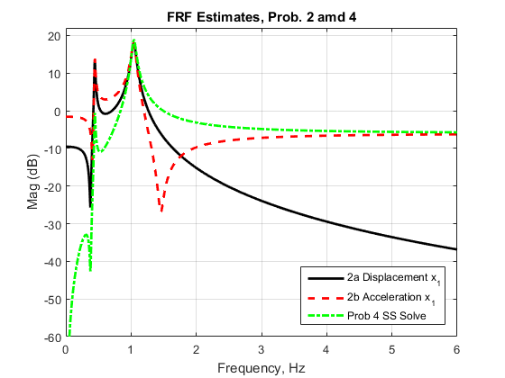
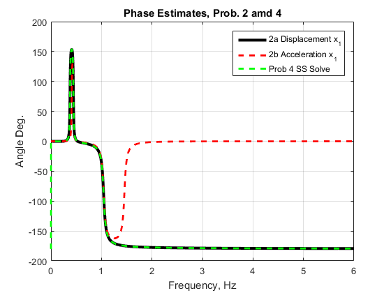
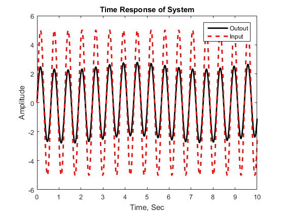
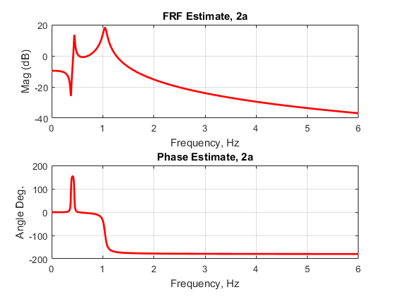
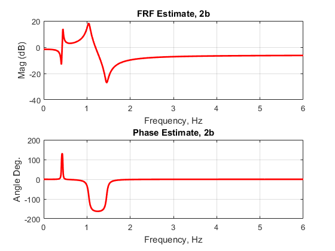
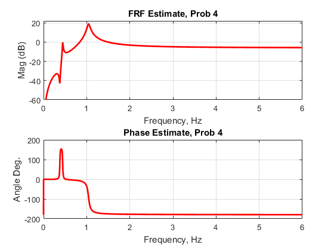

clear all clc syms w % define pertinent matrices for problem 2 M=[2 0; 0 7]; K=[2 -1; -1 2]; Cd=[0.1 -0.1; -0.1 0.2]; % define A matrix MK=-K/M; MC=-Cd/M; display('A matrix below') A=[zeros(2) eye(2); MK' MC'] % Define B matrix Btilde=[1 -1]; B2= inv(M)*Btilde'; display('B matrix below') B=[0 0 B2']' % -----------------------Following steps calculate FRF--------------------- % ------------------------------------------------------------------------- Iw = w*j*eye(4); % define term (jwI - A) display('(jwI - A) below') A1=Iw-A % calculate (jwI - A)^-1 display('(jwI - A)^-1 below') A1inv = inv(A1) % Next set of code pertains specifically to part a------------------------- display('"C" and "D" Definitions of 2a') Ca = [1 0 0 0] Da=0 % FRF for part a display('FRF for part a below') Ta=Ca*A1inv*B + Da w1=[0:0.001:6]; TaEval=eval(subs(Ta, w1)); % Next set of code pertains specifically to part b------------------------- display('"C" and "D "Definitions of 2b') Cb = [-1 0.5 -0.05 0.05] Db = 0.5 % FRF for part b display('FRF for part b below') Tb=Ca*A1inv*B + Db TbEval=eval(subs(Tb, w1)); % Define phase for part a and b phase_a=unwrap(angle(TaEval))*180/pi; phase_b=unwrap(angle(TbEval))*180/pi; %
A matrix below
A =
0 0 1.0000 0
0 0 0 1.0000
-1.0000 0.5000 -0.0500 0.0500
0.1429 -0.2857 0.0143 -0.0286
B matrix below
B =
0
0
0.5000
-0.1429
(jwI - A) below
A1 =
[ w*1i, 0, -1, 0]
[ 0, w*1i, 0, -1]
[ 1, -1/2, 1/20 + w*1i, -1/20]
[ -1/7, 2/7, -1/70, 1/35 + w*1i]
(jwI - A)^-1 below
A1inv =
[ -(- 4200*w^3 + w^2*330i + 1203*w - 30i)/(3*(w^4*1400i + 110*w^3 - w^2*1801i - 40*w + 300i)), -(700*w)/(w^4*1400i + 110*w^3 - w^2*1801i - 40*w + 300i), (40*(- 35*w^2 + w*1i + 10))/(1400*w^4 - w^3*110i - 1801*w^2 + w*40i + 300), -(70*(w - 10i))/(w^4*1400i + 110*w^3 - w^2*1801i - 40*w + 300i)]
[ -(10*(20*w + 1i))/(w^4*1400i + 110*w^3 - w^2*1801i - 40*w + 300i), -(- 1400*w^3 + w^2*110i + 1401*w - 30i)/(w^4*1400i + 110*w^3 - w^2*1801i - 40*w + 300i), -(20*(w - 10i))/(w^4*1400i + 110*w^3 - w^2*1801i - 40*w + 300i), (70*(- 20*w^2 + w*1i + 20))/(1400*w^4 - w^3*110i - 1801*w^2 + w*40i + 300)]
[ -(10*(- 140*w^2 + w*3i + 30))/(1400*w^4 - w^3*110i - 1801*w^2 + w*40i + 300), -(700*w^2)/(1400*w^4 - w^3*110i - 1801*w^2 + w*40i + 300), -(40*(- 35*w^3 + w^2*1i + 10*w))/(w^4*1400i + 110*w^3 - w^2*1801i - 40*w + 300i), (70*(- w^2 + w*10i))/(1400*w^4 - w^3*110i - 1801*w^2 + w*40i + 300)]
[ (w*(- 1 + w*20i)*10i)/(1400*w^4 - w^3*110i - 1801*w^2 + w*40i + 300), -(10*(- 40*w^2 + w*1i + 30))/(1400*w^4 - w^3*110i - 1801*w^2 + w*40i + 300), (20*(- 3*w^2 + w*30i))/(3*(1400*w^4 - w^3*110i - 1801*w^2 + w*40i + 300)), -(70*(- 60*w^3 + w^2*3i + 60*w))/(3*(w^4*1400i + 110*w^3 - w^2*1801i - 40*w + 300i))]
"C" and "D" Definitions of 2a
Ca =
1 0 0 0
Da =
0
FRF for part a below
Ta =
(20*(- 35*w^2 + w*1i + 10))/(1400*w^4 - w^3*110i - 1801*w^2 + w*40i + 300) + (10*(w - 10i))/(w^4*1400i + 110*w^3 - w^2*1801i - 40*w + 300i)
"C" and "D "Definitions of 2b
Cb =
-1.0000 0.5000 -0.0500 0.0500
Db =
0.5000
FRF for part b below
Tb =
(20*(- 35*w^2 + w*1i + 10))/(1400*w^4 - w^3*110i - 1801*w^2 + w*40i + 300) + (10*(w - 10i))/(w^4*1400i + 110*w^3 - w^2*1801i - 40*w + 300i) + 1/2
%Define problem 4 and use lsim to solve the problem t=[0:0.001:10]; u=5*sin(10*t); % system defined in state space, then it will be converted into a % transfer function_this is for part 2b sys = ss(A, B, Cb, Db); %sys = ss(A, B, Ca, Da); % define transfer function based on the state space model display('Transfer function for Prob 4 used in "Isim" call') H=tf(sys) % define intial condition (not required to run the model) xO = [0, 0, 0, 0]; y = lsim(H, u, t, xO); %define numerator and denominator of transfer function H for plots num = [0.5, 0.007143, 0.07143, 0, 0]; den = [1, 0.07857, 1.286, 0.02857, 0.2143]; %w1 = 0:0.001:6; P = freqs(num, den, w1); mag = abs(P); phase = unwrap(angle(P)); phasedeg = phase*(180/pi);
Transfer function for Prob 4 used in "Isim" call
H =
0.5 s^4 + 0.007143 s^3 + 0.07143 s^2
--------------------------------------------------
s^4 + 0.07857 s^3 + 1.286 s^2 + 0.02857 s + 0.2143
Continuous-time transfer function.
Plotting section
%Plot frequency response functions plot(w1, 20*log10(abs(TaEval)), 'k-', 'linewidth', 2); hold on plot(w1, 20*log10(abs(TbEval)), 'r--', 'linewidth', 2); hold on plot(w1, 20*log10(mag), '-.g', 'linewidth', 2); axis([0 inf -60 22]); legend('2a Displacement x_1', '2b Acceleration x_1', 'Prob 4 SS Solve', ... 'Location', 'Southeast'); title('FRF Estimates, Prob. 2 amd 4'); xlabel('Frequency, Hz'); ylabel('Mag (dB)'); grid on %Plot phase diagrams figure plot(w1, phase_a, 'k-', 'linewidth', 3); hold on plot(w1, phase_b, 'r--', 'linewidth', 2); hold on plot(w1, phasedeg-180, '--g', 'linewidth', 2); legend('2a Displacement x_1', '2b Acceleration x_1', 'Prob 4 SS Solve', ... 'Location', 'Northeast'); title('Phase Estimates, Prob. 2 amd 4'); xlabel('Frequency, Hz'); ylabel('Angle Deg.'); grid on %Plot time response obtained using Isim figure plot(t, y, 'k-', 'linewidth', 2); hold on plot(t, u, '--r', 'linewidth', 2); legend('Outout', 'Input', ... 'Location', 'Northeast'); axis([0 inf -6 6]); title('Time Response of System'); xlabel('Time, Sec'); ylabel('Amplitude');  
Sub-Plot section
%Plot FRF for 2a figure subplot(211); plot(w1, 20*log10(abs(TaEval)), 'r-', 'linewidth', 2); title('FRF Estimate, 2a'); xlabel('Frequency, Hz'); ylabel('Mag (dB)'); grid on subplot(212); plot(w1, phase_a, 'r-', 'linewidth', 2); title('Phase Estimate, 2a'); xlabel('Frequency, Hz'); ylabel('Angle Deg.'); grid on %Plot FRF for 2b figure subplot(211); plot(w1, 20*log10(abs(TbEval)), 'r-', 'linewidth', 2); title('FRF Estimate, 2b'); xlabel('Frequency, Hz'); ylabel('Mag (dB)'); grid on subplot(212); plot(w1, phase_b, 'r-', 'linewidth', 2); title('Phase Estimate, 2b'); xlabel('Frequency, Hz'); ylabel('Angle Deg.'); grid on %Plot FRF for Prob 4 figure subplot(211); plot(w1, 20*log10(mag), 'r-', 'linewidth', 2); axis([0 inf -60 22]) title('FRF Estimate, Prob 4'); xlabel('Frequency, Hz'); ylabel('Mag (dB)'); grid on subplot(212); plot(w1, phasedeg-180, 'r-', 'linewidth', 2); title('Phase Estimate, Prob 4'); xlabel('Frequency, Hz'); ylabel('Angle Deg.'); grid on  